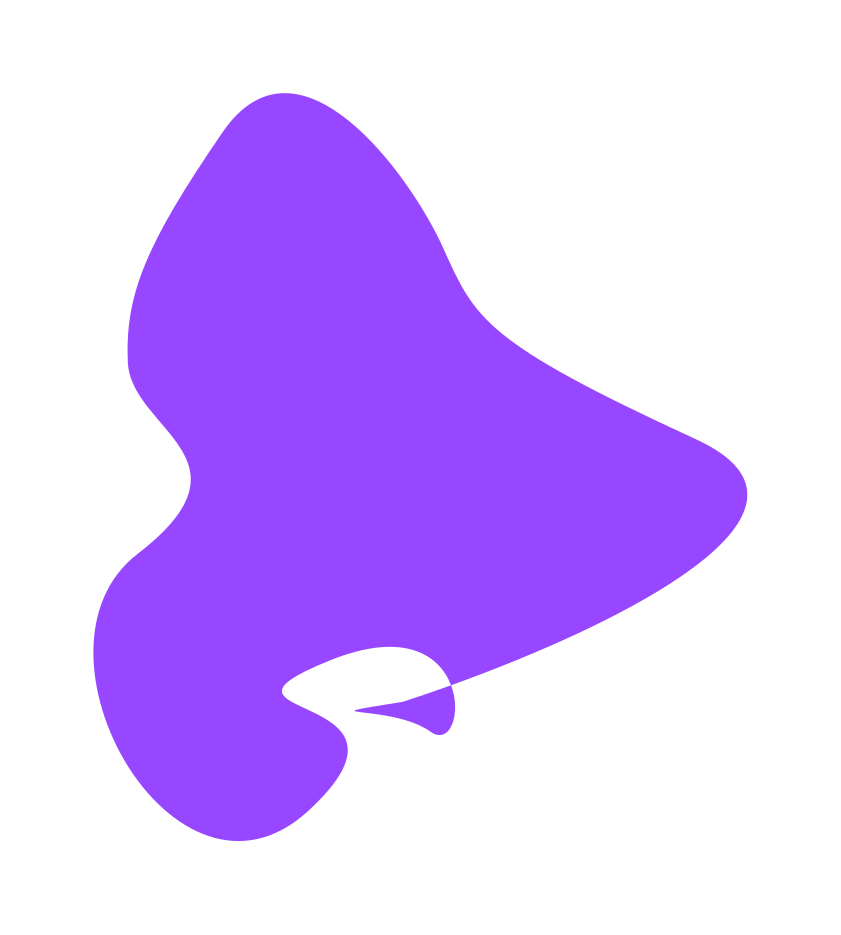

<section id="about-me" #aboutMe>
  
  <div id="about-me-container">
    <div
      data-aos="slide-right"
      data-aos-delay="125"
      data-aos-duration="4000"
      id="about-me-text-container"
    >
      @if (dataService.lang === 'en') {
      <h2 data-aos="slide-right" data-aos-duration="4000" data-aos-delay="125">
        About me
      </h2>
      <p class="text-english">
        I am a Junior Frontend Developer from the district of Osnabrück. On my
        portfolio page, I showcase my previous projects and share my journey as
        a web developer. Welcome to my site! I am glad to give you insight into
        my work.
      </p>
      <div class="text-container">
        
        <p>
          I am very stubborn when it comes to programming. I see every coding
          task as a chance to challenge myself and improve my skills.
        </p>
      </div>
      <div class="text-container">
        
        <p>
          A big goal for me is to work on interesting projects,It is important
          to me to collaborate with teams who share my passion for IT.
        </p>
      </div>
      <div class="text-container">
        
        <p>
          I got a growth mindset and a particular interest in learning new
          technologies such as React, Vue.Js or Python. In the future, it is
          also my goal is to become a full-stack developer.
        </p>
      </div>
      } @else {
      <h2 data-aos="slide-right" data-aos-duration="4000" data-aos-delay="125">
        Über mich
      </h2>
      <p class="text-german">
        Ich bin ein Junior Frontend Developer aus dem Landkreis Osnabrück. Auf
        meiner Portfolio-Seite präsentiere ich meine bisherigen Projekte und
        teile meine Reise als Webentwickler. Herzlich willkommen auf meiner
        Seite! Ich freue mich, euch Einblicke in meine Arbeit zu geben.
      </p>
      <div class="text-container">
        
        <p class="text-german">
          Ich bin sehr hartnäckig beim programmieren. Ich sehe jede
          Programmieraufgabe als Chance, mich selbst herauszufordern und meine
          meine Fähigkeiten zu verbessern.
        </p>
      </div>
      <div class="text-container">
        
        <p class="text-german">
          Ein besonderes Anliegen ist es mir, an anspruchsvollen Projekten zu
          arbeiten. Dabei ist es mir wichtig, mit Teams zusammenzuarbeiten, die
          meine Leidenschaft für die IT teilen.
        </p>
      </div>
      <div class="text-container">
        
        <p class="text-german">
          Ich bin daran interessiert, neue Technologien zu erlernen.
          Insbesondere an React, Vue.Js oder Python. Zudem ist es in Zukunft mein
          Ziel ein Full-Stack-Entwicklers zu werden.
        </p>
      </div>
      }
    </div>
    <div
      data-aos="slide-left"
      data-aos-duration="4000"
      id="circle-pic-container"
    >
      <div class="green-circle">
        
      </div>
      <div id="about-me-line"></div>
    </div>
  </div>
</section>
